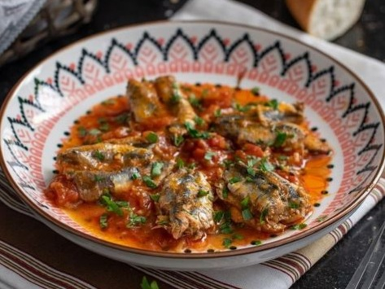

chtitha sardine

description
"Chtitha Sardine" is a flavorful Algerian dish, it is a savory delight that brings together the fresh and briny taste of sardines with the robust flavors of a well-spiced tomato sauce. The dish starts with the preparation of a luscious sauce made from ripe tomatoes, aromatic onions, and a blend of carefully selected spices. The spices, including ground cumin, paprika, and a touch of cayenne pepper, infuse the sauce with warmth and depth.
Ingredients
- 1kg fresh sardines cleaned and scaled
- 2 large onions, finely chopped
- 4 ripe tomatoes, pealed and chopped
- 7 cloves of garlic
- 1/4 cup olive oil
- 3 teaspoons ground cumin
- 1 teaspoon paprika
- 1/2 teaspoon cayenne pepper
- 1 tablespoon red pepper paste
- salt and black pepper
- 1 cup water
- chopped parsley
Steps
A/Prepare the Sardine.
- clean and scale the sardine, removing the head and tail.
- Debone and butterfly the sardines.
- Mix 5 of the minced garlic with the spices and,tablespoon of red pepper paste, salt and pepper.
- spread a bit of the spices mixture on the inside of one sardine and cover it with another one.
B/ The sauce
- In a large skillet, heat the olive oil over medium heat. Add the finely chopped onions and sauté until they become translucent.
- Add the chopped tomatoes and cook until they break down and release their juices, then add 1 tablespoon of red paper paste
- Allow the sauce to simmer and thicken.
- After it thickens add the sardines and the cup of water and lower the heat. Let it simmer until the sardine is cooked
- Turn of the heat and add the parsley